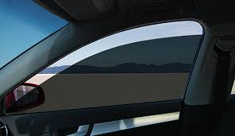

Residencial · Conforto Sem Obras
Controle de calor, proteção UV e privacidade para apartamentos e casas — instalado sobre o vidro existente, sem reforma, sem quebradeira.
O que a película resolve
Em São Paulo, apartamentos orientados a oeste recebem sol direto durante a tarde toda. O vidro — mesmo duplo — transmite boa parte da radiação infravermelha, que aquece o ar interno antes de qualquer cortina poder agir.
A película é instalada diretamente na face interna do vidro e age antes que o calor entre: bloqueia a radiação na origem. Cortinas e persianas só funcionam depois que o calor já passou pelo vidro — a película age no ponto certo.
Além do calor, a película bloqueia 99% dos raios UV — os responsáveis pelo desbotamento de móveis, tapetes e obras de arte expostos à luz solar direta.

Janela com película residencial instalada
Tipos de película residencial
Para quem quer máximo conforto térmico sem escurecer o ambiente. VLT alto (65–80%) com alta rejeição de infravermelho — invisível mas eficiente.
Efeito espelho no lado externo durante o dia: quem está fora vê o reflexo da rua, não o interior. Quem está dentro enxerga normalmente para fora.
Para janelas de fácil acesso, como térreo ou área de serviço. Mantém os cacos unidos em caso de quebra e retarda tentativas de invasão.
Uma única instalação com os dois benefícios: rejeição de calor e resistência mecânica. Indicada para lojas, salas comerciais e residências em andar baixo.
Para quem tem quadros, esculturas, mobiliário de alto valor ou plantas que precisam de luz mas não de UV. Película quase transparente com foco no bloqueio ultravioleta.
Para quem quer privacidade diurna com algum controle solar. VLT de 20 a 50% — escurece levemente o ambiente mas melhora conforto visual e térmico.
Perguntas reais de clientes
Fale com a equipe pelo WhatsApp. Orientação gratuita antes de qualquer orçamento.